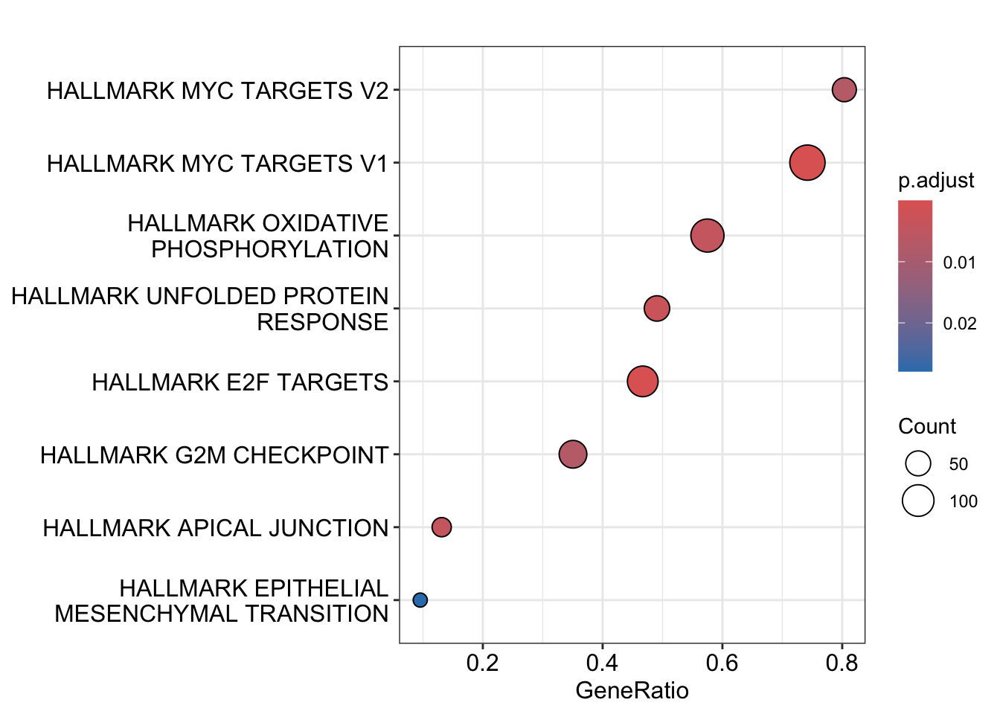
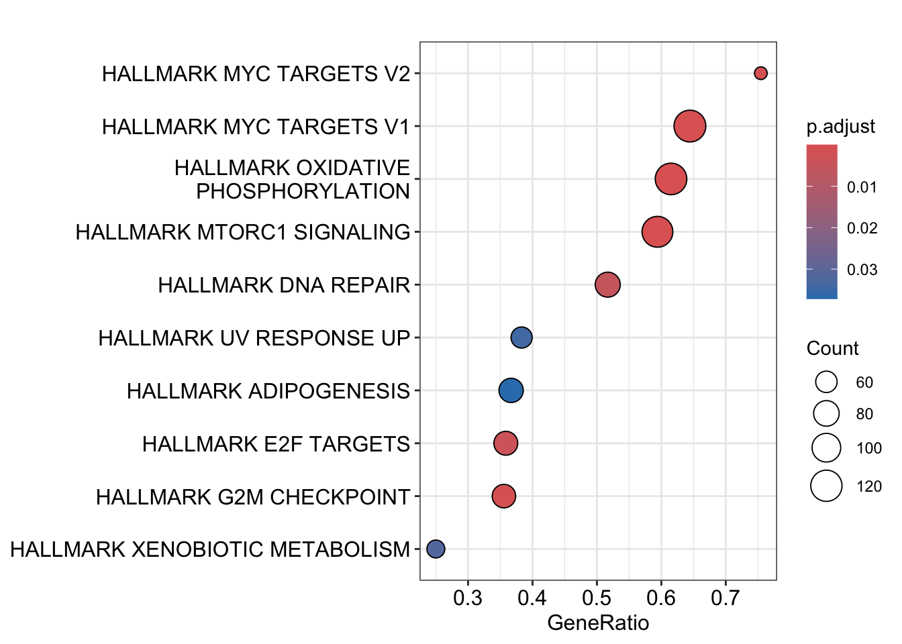
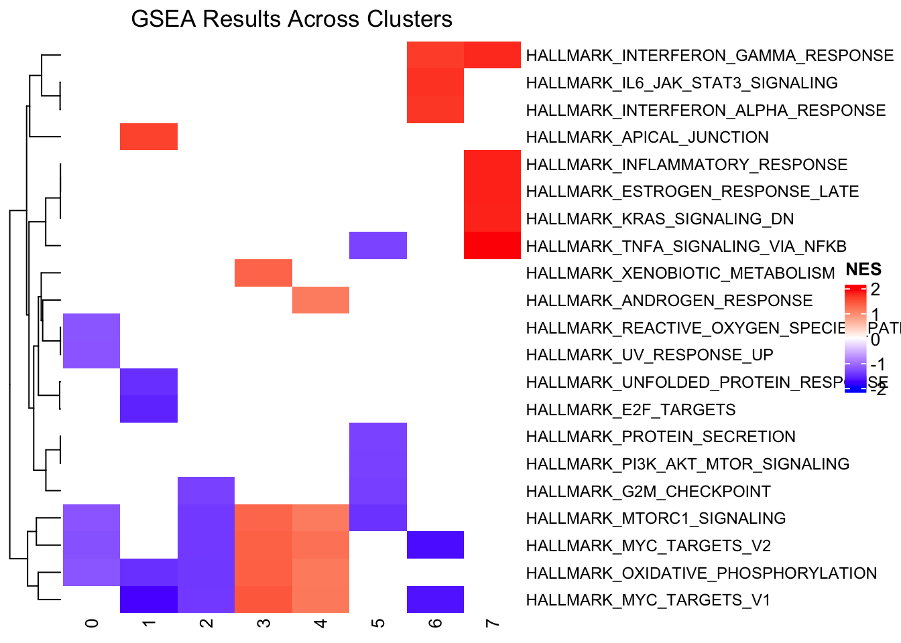
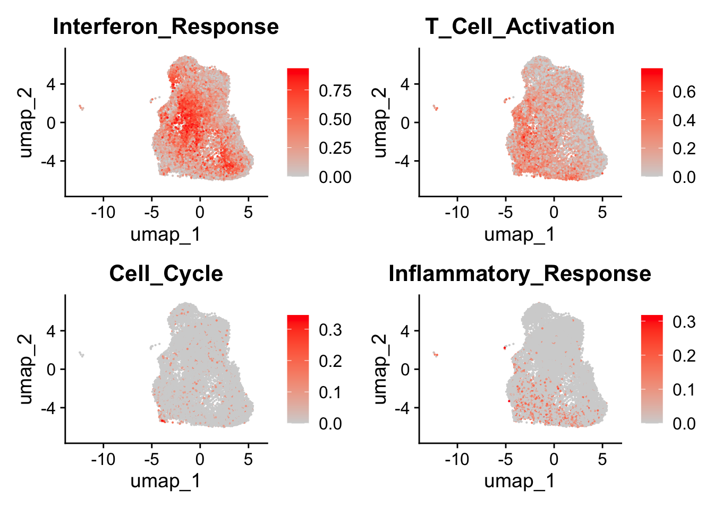
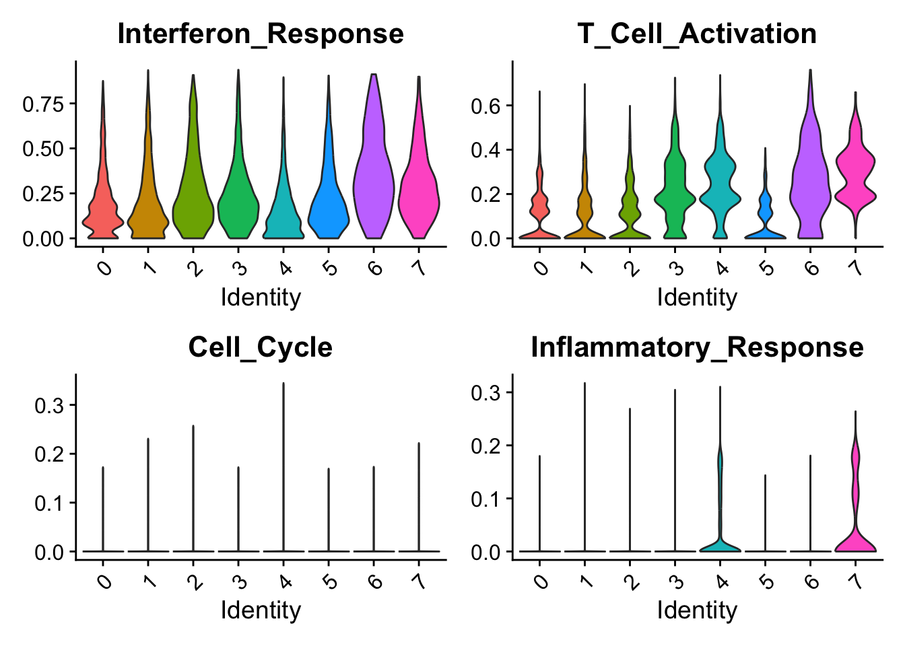

Chapter 5 Gene set analysis
5.1 Why think in gene sets?
So you’ve identified your clusters and annotated your cell types. Now what? The obvious next step is to ask: what biological processes are actually different between these cell populations?
You could look at differentially expressed genes one by one, and that’s fine up to a point. But single genes are noisy, and biology rarely works through one gene at a time. Pathways, cellular processes, molecular programs – these involve coordinated regulation of many genes. That’s where gene set analysis comes in.
There are several good reasons to think in terms of gene sets rather than individual genes:
Pathways are more robust. If 15 out of 20 glycolysis genes show moderate upregulation, that’s stronger evidence than one gene showing high upregulation. Knowing that “interferon signaling” is enriched is also more interpretable than seeing IRF1, STAT1, and MX1 are upregulated and having to mentally connect them yourself.
Aggregating across related genes can also detect subtle but consistent changes that individual gene tests would miss entirely. This is especially important in single-cell data, which is sparse – individual genes may have zero counts in many cells due to dropout. Pathways aggregate signal across multiple genes and reduce noise.
5.2 Two approaches: ORA vs GSEA
I see people confuse these two all the time, so let me be clear about the distinction. They answer different questions and take different inputs. Read this chapter from the clusterProfiler book for a thorough treatment.
5.2.1 Over-Representation Analysis (ORA)
ORA is the simpler approach. You start with a list of “interesting” genes – typically your significant DEGs (e.g., padj < 0.05 and |logFC| > 0.5). Then you ask: are genes from a particular pathway over-represented in my list compared to what you’d expect by chance?
The math behind it is a hypergeometric test (or equivalently, Fisher’s exact test). Think of it like drawing balls from an urn. You have 20,000 genes total, 200 are in the “interferon response” pathway, you drew 500 DEGs, and 30 of them are interferon genes. Is 30 out of 500 more than you’d expect if you randomly drew 500 genes from 20,000?
In clusterProfiler, ORA functions are: enrichGO(), enrichKEGG(), enricher() (for custom gene sets).
The limitation: ORA throws away information. By requiring a significance cutoff, you lose all the genes that just barely missed the threshold. A gene with padj = 0.06 contributes nothing, even though it’s nearly as informative as one with padj = 0.04. The choice of cutoff is arbitrary and can change your results.
5.2.2 Gene Set Enrichment Analysis (GSEA)
GSEA takes a different approach. Instead of a filtered gene list, it uses ALL genes ranked by a metric that captures both effect size and significance. No arbitrary cutoff needed.
The core question: are genes in a particular pathway concentrated toward the top (or bottom) of the ranked list, more than you’d expect by chance?
Here’s a way to think about it. Imagine you have a deck of 20,000 cards (genes), and you’ve marked 50 of them as “interferon response genes.” You lay out all cards in order from most upregulated to most downregulated. If most of those 50 interferon cards are near the top, that’s unlikely to be random – it suggests the interferon response pathway is activated.
In clusterProfiler, GSEA functions are: gseGO(), gseKEGG(), GSEA() (for custom gene sets).
We’ll use GSEA (not ORA) in this chapter because it uses all the information in our data. But both are valid – ORA is faster and simpler, GSEA is more sensitive to subtle but coordinated changes.
5.2.3 The GSEA algorithm in three steps
Step 1: Rank all genes. You create a ranked list of all genes – not just the significant ones. You rank by a statistic that combines effect size and significance. A common ranking metric:
rank_statistic = sign(logFC) x -log10(p-value)Positive values mean upregulated genes, negative values mean downregulated genes, and the magnitude reflects both fold-change and statistical confidence.
Step 2: Calculate the Enrichment Score (ES). For each gene set (e.g., “Interferon Response”), walk down the ranked list. When you encounter a gene that IS in the set, increase a running score (weighted by its rank). When you encounter a gene NOT in the set, decrease the score. The ES is the maximum deviation from zero during this walk.
An ES near +1 means the gene set is enriched at the top (pathway activated). Near -1 means enriched at the bottom (suppressed). Near 0 means genes are randomly distributed – no enrichment.
Step 3: Assess statistical significance. GSEA uses permutation testing: randomly shuffle gene labels, recalculate ES, repeat 1,000 times to build a null distribution, then compare your observed ES to that distribution.
GSEA reports a Normalized Enrichment Score (NES), which adjusts for gene set size so you can compare across sets, and FDR (False Discovery Rate) to account for multiple testing. Typical cutoffs are |NES| > 1.5 and FDR < 0.25.
5.2.4 Gene signature scoring (per-cell)
At the end of this chapter, we’ll also cover a third approach: gene signature scoring. This is different from both ORA and GSEA – instead of comparing groups, it scores each individual cell for pathway activity. Methods like UCell assign every cell a score for every pathway. This lets you visualize pathway activity on a UMAP and spot heterogeneity within clusters.
5.3 Choosing Gene Sets
The gene sets you choose determine the questions you can answer, so it’s worth knowing what’s out there.
5.3.1 Major Gene Set Resources
MSigDB (Molecular Signatures Database) is the gold standard for human gene sets. It’s organized into collections: H (Hallmark) has 50 well-defined biological states with minimal redundancy; C2 has curated pathway databases like KEGG, Reactome, and BioCarta; C3 has regulatory targets (transcription factors, microRNAs); C5 has Gene Ontology sets; C7 has immunologic signatures; and C8 has cell type signatures.
For our PBMC data, we’ll use Blood Transcription Modules (BTM) – these are particularly relevant for immune cells. They were derived from a systems biology study of human vaccine responses and represent coordinated gene expression patterns in blood, including things like inflammation, T cell activation, B cell activation, NK cell functions, and monocyte activation. Since these gene sets were specifically designed for blood cells, they’re ideal for interpreting PBMC scRNA-seq data.
Other resources worth knowing about: KEGG/Reactome for metabolic and signaling pathways, GO (Gene Ontology) which is comprehensive but highly redundant, CellMarker/PanglaoDB for cell type-specific markers, and of course you can always define custom gene sets from the literature.
My recommendation: start with focused, well-curated collections like Hallmark or BTM before going to larger, more redundant collections like GO. Smaller, high-quality gene sets are easier to interpret and you’re less likely to run into multiple testing issues (see sc-best-practices.org).
5.4 Loading Gene Sets
5.4.1 Blood Transcription Modules
Download the gmt file from the BTM repository and load it using clusterProfiler:
library(here)
#download.file("https://raw.githubusercontent.com/shuzhao-li/BTM/master/BTM/datasets/BTM_for_GSEA_20131008.gmt",
# destfile = here("data/BTM_for_GSEA_20131008.gmt"))
immune_signatures<- clusterProfiler::read.gmt(here("data/BTM_for_GSEA_20131008.gmt"))
head(immune_signatures)#> term gene
#> 1 targets of FOSL1/2 (M0) CCL2
#> 2 targets of FOSL1/2 (M0) COL1A2
#> 3 targets of FOSL1/2 (M0) DCN
#> 4 targets of FOSL1/2 (M0) IL6
#> 5 targets of FOSL1/2 (M0) IL8
#> 6 targets of FOSL1/2 (M0) LIF5.4.2 MSigDB Hallmark Gene Sets
The Hallmark gene sets from MSigDB are particularly useful – 50 well-defined biological states with minimal redundancy. Let’s load them using the msigdbr package:
# install.packages("msigdbr")
library(msigdbr)
# all gene sets for human
m_df <- msigdbr(species = "Homo sapiens")
head(m_df)#> # A tibble: 6 × 15
#> gs_cat gs_subcat gs_name gene_symbol entrez_gene ensembl_gene
#> <chr> <chr> <chr> <chr> <int> <chr>
#> 1 C3 MIR:MIR_Legacy AAACCAC_MIR140 ABCC4 10257 ENSG00000125257
#> 2 C3 MIR:MIR_Legacy AAACCAC_MIR140 ABRAXAS2 23172 ENSG00000165660
#> 3 C3 MIR:MIR_Legacy AAACCAC_MIR140 ACTN4 81 ENSG00000130402
#> 4 C3 MIR:MIR_Legacy AAACCAC_MIR140 ACTN4 81 ENSG00000282844
#> 5 C3 MIR:MIR_Legacy AAACCAC_MIR140 ACVR1 90 ENSG00000115170
#> 6 C3 MIR:MIR_Legacy AAACCAC_MIR140 ADAM9 8754 ENSG00000168615
#> # ℹ 9 more variables: human_gene_symbol <chr>, human_entrez_gene <int>,
#> # human_ensembl_gene <chr>, gs_id <chr>, gs_pmid <chr>, gs_geoid <chr>,
#> # gs_exact_source <chr>, gs_url <chr>, gs_description <chr># only the Hallmark gene set
m_t2g <- msigdbr(species = "Homo sapiens", category = "H") %>%
dplyr::select(gs_name, gene_symbol)
head(m_t2g)#> # A tibble: 6 × 2
#> gs_name gene_symbol
#> <chr> <chr>
#> 1 HALLMARK_ADIPOGENESIS ABCA1
#> 2 HALLMARK_ADIPOGENESIS ABCB8
#> 3 HALLMARK_ADIPOGENESIS ACAA2
#> 4 HALLMARK_ADIPOGENESIS ACADL
#> 5 HALLMARK_ADIPOGENESIS ACADM
#> 6 HALLMARK_ADIPOGENESIS ACADS5.5 Preparing Data for GSEA
Now that we have gene sets loaded, we need to prepare our single-cell data. GSEA requires marker genes for each cluster (differential expression results) and a ranked gene list for each cluster.
Let’s load our Seurat object and calculate marker genes.
5.5.1 Calculate Marker Genes with presto
obj<- readRDS(here("data/pbmc_seurat_obj.rds"))
library(Seurat)
library(dplyr)
markers_seurat<- presto::wilcoxauc(obj, group_by = "seurat_clusters")
head(markers_seurat)#> feature group avgExpr logFC statistic auc pval
#> 1 MIR1302.2HG 0 0.00000000 0.0000000000 34538717 0.5000000 1.000000e+00
#> 2 OR4F5 0 0.00000000 0.0000000000 34538717 0.5000000 1.000000e+00
#> 3 AL627309.4 0 0.00000000 0.0000000000 34538717 0.5000000 1.000000e+00
#> 4 LINC01409 0 0.01537173 0.0011655866 34483940 0.4992070 4.042823e-01
#> 5 LINC01128 0 0.03162368 -0.0064985834 33950532 0.4914851 9.476258e-08
#> 6 SAMD11 0 0.00000000 -0.0005175812 34518382 0.4997056 1.027964e-01
#> padj pct_in pct_out
#> 1 1.000000e+00 0.000000 0.0000000
#> 2 1.000000e+00 0.000000 0.0000000
#> 3 1.000000e+00 0.000000 0.0000000
#> 4 8.898393e-01 1.150697 1.3149287
#> 5 5.240866e-07 2.323523 4.0887086
#> 6 3.002035e-01 0.000000 0.05887745.5.2 Organizing Data with Nested Dataframes
We have marker genes for all 10 clusters. We could copy-paste the GSEA code 10 times, but you see the pattern here – that’s a lot of repetition. As we discussed in Chapter 2, the “Do Not Repeat Yourself” principle saves us.
Instead, we’ll use nested dataframes with list columns. This keeps everything organized and eliminates code repetition. Let’s nest the markers by cluster:
#> # A tibble: 8 × 2
#> # Groups: group [8]
#> group data
#> <chr> <list>
#> 1 0 <tibble [36,601 × 9]>
#> 2 1 <tibble [36,601 × 9]>
#> 3 2 <tibble [36,601 × 9]>
#> 4 3 <tibble [36,601 × 9]>
#> 5 4 <tibble [36,601 × 9]>
#> 6 5 <tibble [36,601 × 9]>
#> 7 6 <tibble [36,601 × 9]>
#> 8 7 <tibble [36,601 × 9]>#> # A tibble: 36,601 × 9
#> feature avgExpr logFC statistic auc pval padj pct_in pct_out
#> <chr> <dbl> <dbl> <dbl> <dbl> <dbl> <dbl> <dbl> <dbl>
#> 1 MIR1302.2HG 0 0 34538717 0.5 1 e+ 0 1 e+ 0 0 0
#> 2 OR4F5 0 0 34538717 0.5 1 e+ 0 1 e+ 0 0 0
#> 3 AL627309.4 0 0 34538717 0.5 1 e+ 0 1 e+ 0 0 0
#> 4 LINC01409 1.54e-2 1.17e-3 34483940 0.499 4.04e- 1 8.90e- 1 1.15 1.31
#> 5 LINC01128 3.16e-2 -6.50e-3 33950532. 0.491 9.48e- 8 5.24e- 7 2.32 4.09
#> 6 SAMD11 0 -5.18e-4 34518382. 0.500 1.03e- 1 3.00e- 1 0 0.0589
#> 7 LINC01342 0 -5.25e-5 34536458. 0.500 5.87e- 1 1 e+ 0 0 0.00654
#> 8 TTLL10 2.75e-4 -1.93e-4 34532804 0.500 5.91e- 1 1 e+ 0 0.0221 0.0393
#> 9 SCNN1D 2.19e-3 1.40e-3 34575016. 0.501 4.50e- 2 1.49e- 1 0.177 0.0720
#> 10 MRPL20.AS1 7.55e-2 -2.41e-2 33310218 0.482 6.54e-14 4.95e-13 5.62 9.43
#> # ℹ 36,591 more rowsWe then have a list-column for the markers of each cluster/the group column.
Note that presto returns all genes for each cluster – all 36,601 of them. This is exactly what GSEA needs! Remember: GSEA uses the entire ranked gene list, not a filtered subset. If you pre-filter to only significant genes, you’re doing ORA, not GSEA. Don’t pre-filter your gene list!
5.5.3 Creating a Ranked Gene List
For GSEA, we need to rank all genes by a metric that captures both effect size (logFC) and statistical significance (p-value). We’ll use:
rank_statistic = sign(logFC) × -log10(p-value)This way, upregulated genes with strong evidence get high positive scores, downregulated genes with strong evidence get high negative scores, and genes with weak evidence (high p-values) get scores near zero.
Let’s write a function to create this ranked list:
# let's write a function for that
# install it from bioconductor, if you do not have it. we will use it to map gene names
library(org.Hs.eg.db)
rank_genes<- function(deg, symbol= TRUE){
genes<- deg$feature
#some gene sets require ENTREZID instead of gene symbol, let's map them
gene_map<- clusterProfiler::bitr(genes,fromType = "SYMBOL", toType = "ENTREZID", OrgDb = org.Hs.eg.db)
res_df<- inner_join(deg, gene_map, by = c("feature" = "SYMBOL")) %>%
filter(!pval==0) %>%
mutate(signed_rank_stats = sign(logFC) * -log10(pval)) %>%
arrange(desc(signed_rank_stats))
if (symbol){
gene_list<- res_df$signed_rank_stats
names(gene_list)<- res_df$feature
} else {
gene_list<- res_df$signed_rank_stats
names(gene_list)<- res_df$ENTREZID
}
return(gene_list)
}This function will return a ranked gene list
#> # A tibble: 6 × 9
#> feature avgExpr logFC statistic auc pval padj pct_in pct_out
#> <chr> <dbl> <dbl> <dbl> <dbl> <dbl> <dbl> <dbl> <dbl>
#> 1 MIR1302.2HG 0 0 34538717 0.5 1 e+0 1 e+0 0 0
#> 2 OR4F5 0 0 34538717 0.5 1 e+0 1 e+0 0 0
#> 3 AL627309.4 0 0 34538717 0.5 1 e+0 1 e+0 0 0
#> 4 LINC01409 0.0154 0.00117 34483940 0.499 4.04e-1 8.90e-1 1.15 1.31
#> 5 LINC01128 0.0316 -0.00650 33950532. 0.491 9.48e-8 5.24e-7 2.32 4.09
#> 6 SAMD11 0 -0.000518 34518382. 0.500 1.03e-1 3.00e-1 0 0.0589#> EEF2 PABPC1 SNHG29 RPL10A RPS8 RPL5
#> 303.3946 295.4486 275.6753 271.2262 256.6863 254.2618# returns a ranked gene list with ENTREZID
rank_genes(markers_nested$data[[1]], symbol = FALSE) %>% head()#> 1938 26986 125144 4736 6202 6125
#> 303.3946 295.4486 275.6753 271.2262 256.6863 254.2618library(clusterProfiler)
library(enrichplot)
em1 <- GSEA(rank_genes(markers_nested$data[[1]]), TERM2GENE= m_t2g)
em1@result %>% head()#> ID
#> HALLMARK_MTORC1_SIGNALING HALLMARK_MTORC1_SIGNALING
#> HALLMARK_OXIDATIVE_PHOSPHORYLATION HALLMARK_OXIDATIVE_PHOSPHORYLATION
#> HALLMARK_ADIPOGENESIS HALLMARK_ADIPOGENESIS
#> HALLMARK_UV_RESPONSE_UP HALLMARK_UV_RESPONSE_UP
#> HALLMARK_INTERFERON_GAMMA_RESPONSE HALLMARK_INTERFERON_GAMMA_RESPONSE
#> HALLMARK_MYC_TARGETS_V1 HALLMARK_MYC_TARGETS_V1
#> Description setSize
#> HALLMARK_MTORC1_SIGNALING HALLMARK_MTORC1_SIGNALING 197
#> HALLMARK_OXIDATIVE_PHOSPHORYLATION HALLMARK_OXIDATIVE_PHOSPHORYLATION 199
#> HALLMARK_ADIPOGENESIS HALLMARK_ADIPOGENESIS 199
#> HALLMARK_UV_RESPONSE_UP HALLMARK_UV_RESPONSE_UP 153
#> HALLMARK_INTERFERON_GAMMA_RESPONSE HALLMARK_INTERFERON_GAMMA_RESPONSE 186
#> HALLMARK_MYC_TARGETS_V1 HALLMARK_MYC_TARGETS_V1 185
#> enrichmentScore NES pvalue
#> HALLMARK_MTORC1_SIGNALING -0.7629230 -1.217636 5.303902e-05
#> HALLMARK_OXIDATIVE_PHOSPHORYLATION -0.7603945 -1.213080 7.276039e-05
#> HALLMARK_ADIPOGENESIS -0.7538520 -1.202643 2.051876e-04
#> HALLMARK_UV_RESPONSE_UP -0.7652326 -1.218136 6.640188e-04
#> HALLMARK_INTERFERON_GAMMA_RESPONSE -0.7486012 -1.194592 6.365426e-04
#> HALLMARK_MYC_TARGETS_V1 -0.7490388 -1.195044 8.838289e-04
#> p.adjust qvalue rank
#> HALLMARK_MTORC1_SIGNALING 0.001819010 0.001263733 2639
#> HALLMARK_OXIDATIVE_PHOSPHORYLATION 0.001819010 0.001263733 2677
#> HALLMARK_ADIPOGENESIS 0.003419793 0.002375856 3868
#> HALLMARK_UV_RESPONSE_UP 0.006640188 0.004613183 2344
#> HALLMARK_INTERFERON_GAMMA_RESPONSE 0.006640188 0.004613183 3706
#> HALLMARK_MYC_TARGETS_V1 0.007365241 0.005116904 1999
#> leading_edge
#> HALLMARK_MTORC1_SIGNALING tags=54%, list=12%, signal=48%
#> HALLMARK_OXIDATIVE_PHOSPHORYLATION tags=58%, list=13%, signal=51%
#> HALLMARK_ADIPOGENESIS tags=48%, list=18%, signal=40%
#> HALLMARK_UV_RESPONSE_UP tags=34%, list=11%, signal=30%
#> HALLMARK_INTERFERON_GAMMA_RESPONSE tags=49%, list=17%, signal=41%
#> HALLMARK_MYC_TARGETS_V1 tags=63%, list=9%, signal=58%
#> core_enrichment
#> HALLMARK_MTORC1_SIGNALING IFRD1/PSMC6/IFI30/TMEM97/SCD/GCLC/GOT1/COPS5/SKAP2/UCHL5/STARD4/HMBS/DHCR7/SSR1/PITPNB/TCEA1/ERO1A/ADIPOR2/LDLR/TBK1/RAB1A/TUBA4A/TES/CYB5B/HSPA4/SEC11A/PPP1R15A/TXNRD1/ACLY/TUBG1/SQSTM1/HPRT1/MTHFD2/PSMC2/CANX/PSMD12/YKT6/ACTR2/G6PD/ATP6V1D/AK4/CDKN1A/PSMG1/ITGB2/ENO1/ACTR3/ATP2A2/PSMB5/PNP/HMGCS1/ABCF2/PPA1/SHMT2/EBP/RRP9/M6PR/DDIT4/BTG2/NIBAN1/LDHA/HSP90B1/UFM1/CYP51A1/INSIG1/PSAT1/SLA/NAMPT/HSPA9/IDI1/CACYBP/NFKBIB/PSME3/CCT6A/PNO1/BHLHE40/TFRC/MAP2K3/RPN1/SQLE/TPI1/PSMC4/HSPA5/PDAP1/PSMD13/PSMA3/SLC1A5/EIF2S2/EEF1E1/PSMD14/PSMA4/ETF1/DDX39A/ATP5MC1/TOMM40/CTSC/SLC7A5/STIP1/UBE2D3/CALR/SDF2L1/PRDX1/PPIA/ARPC5L/CORO1A/HSPE1/GAPDH
#> HALLMARK_OXIDATIVE_PHOSPHORYLATION ATP6V1E1/GOT2/ISCA1/ATP5PB/ACADM/CS/MRPS22/IDH3G/MTX2/IDH2/SDHD/NQO2/RHOT2/IDH3B/GPX4/MGST3/ALAS1/OGDH/ECH1/NDUFV1/MRPL34/MPC1/SLC25A4/GLUD1/SLC25A11/NDUFB4/NDUFA8/FXN/PDHA1/AFG3L2/HTRA2/UQCRH/MDH2/HCCS/MRPS11/ATP6V0C/NDUFA5/IDH3A/NDUFS8/NDUFC1/VDAC3/ATP6V1D/TIMM50/SDHB/SDHC/NDUFA7/CYB5R3/UQCR10/ACO2/NDUFS3/COX6B1/ECHS1/NDUFB3/PRDX3/NDUFA9/ACADVL/SLC25A5/NDUFA3/UQCRC1/LDHA/FDX1/GRPEL1/NDUFV2/PHB2/MRPL15/MRPL11/ATP5F1D/NDUFS7/ETFA/VDAC1/COX6C/UQCRFS1/ATP6V1F/HSPA9/CYB5A/NDUFB6/TOMM22/NDUFA2/TIMM17A/COX5B/MRPS15/ATP5F1B/ATP5F1C/TIMM10/HSD17B10/BAX/TIMM8B/ATP5PF/TIMM13/POLR2F/NDUFA4/CYC1/ATP5MC1/NDUFC2/ATP6V0E1/NDUFB8/NDUFA1/ATP5ME/NDUFA6/MRPS12/COX8A/ATP5MC3/COX7A2/NDUFB7/ATP6V0B/NDUFAB1/NDUFS6/ATP5F1E/COX5A/COX7B/COX17/UQCRQ/ATP5MF/UQCR11/COX6A1/CYCS
#> HALLMARK_ADIPOGENESIS DLAT/RIOK3/PFKL/POR/DGAT1/BAZ2A/FAH/AIFM1/IFNGR1/ACAA2/APLP2/QDPR/UCK1/CHUK/DLD/PGM1/COQ9/GBE1/DECR1/PPP1R15B/NMT1/SUCLG1/JAGN1/GADD45A/SLC25A1/G3BP2/RTN3/ACADM/SAMM50/CS/IDH3G/SLC19A1/PLIN2/PEMT/RNF11/GPAT4/LPCAT3/SLC5A6/GPX4/DNAJB9/MGST3/PFKFB3/HIBCH/SCP2/DHCR7/ECH1/SOD1/STAT5A/AGPAT3/RMDN3/ADIPOR2/ARAF/ACLY/MDH2/YWHAG/DHRS7/UBC/GHITM/NDUFA5/UBQLN1/IDH3A/ESYT1/SDHB/SDHC/UQCR10/ARL4A/ACO2/NDUFS3/ECHS1/PREB/PRDX3/TALDO1/UQCRC1/SQOR/GRPEL1/ESRRA/MRPL15/CHCHD10/AK2/CD151/MTCH2/SLC1A5/DNAJC15/PIM3/TANK/CYC1/STOM/COX8A/NDUFB7/REEP5/NDUFAB1/COX7B/UQCRQ/UQCR11/COX6A1/ATP1B3
#> HALLMARK_UV_RESPONSE_UP PRKCD/HYAL2/DNAJB1/CDC34/NUP58/ALAS1/PPT1/SIGMAR1/GLS/SLC25A4/NR4A1/TUBA4A/CYB5B/RASGRP1/FEN1/SQSTM1/STK25/YKT6/ICAM1/TMBIM6/POLE3/EIF5/CEBPG/PPIF/BTG2/MRPL23/JUNB/GRPEL1/ARRB2/BTG3/BID/GCH1/ATP6V1F/BAK1/POLR2H/AMD1/TFRC/RPN1/CCND3/PDAP1/FKBP4/AP2S1/PSMC3/CLTB/RAB27A/FURIN/STIP1/DNAJA1/BSG/DDX21/NFKBIA/TAP1
#> HALLMARK_INTERFERON_GAMMA_RESPONSE APOL6/PML/NCOA3/RNF31/CASP7/TRIM25/HELZ2/OAS3/CD274/PTPN1/CD38/VAMP5/SOD2/OGFR/CASP1/GBP4/PNPT1/TRIM26/ST8SIA4/ADAR/EIF4E3/LYSMD2/IRF7/HIF1A/USP18/IFI30/NUP93/ITGB7/MVP/EPSTI1/AUTS2/PTPN6/UPP1/ZNFX1/OAS2/BPGM/MX1/PFKP/SAMD9L/RBCK1/PTPN2/TNFAIP3/IRF8/MYD88/PARP14/XCL1/EIF2AK2/ISOC1/CASP4/MTHFD2/PLSCR1/ICAM1/CDKN1A/LCP2/ARL4A/OASL/MT2A/IL10RA/IL15RA/PNP/PSMB10/SLAMF7/LAP3/NFKB1/TAPBP/PSME1/GCH1/NAMPT/BST2/IFI35/ISG15/SOCS1/FAS/IFITM2/PSMB9/PSMB8/IRF4/PSMA3/VAMP8/SRI/SPPL2A/PSMA2/CD74/PSMB2/ISG20/NFKBIA/GZMA/RNF213/IL2RB/KLRK1/TAP1/LY6E
#> HALLMARK_MYC_TARGETS_V1 DHX15/XRCC6/VBP1/XPO1/NCBP2/PCNA/SNRPA/EIF3B/ACP1/AIMP2/HDAC2/ABCE1/HNRNPC/CTPS1/SNRPD2/SRPK1/EIF4H/TRA2B/HPRT1/FAM120A/PWP1/HNRNPR/CBX3/CANX/MRPL9/HDDC2/VDAC3/GLO1/RUVBL2/EIF1AX/EIF4E/POLE3/PSMA1/HNRNPA3/PSMD1/GNL3/PRPF31/PTGES3/TUFM/PRDX3/PA2G4/RRP9/SNRPD3/MRPL23/CCT2/SNRPA1/LDHA/NOP56/SYNCRIP/STARD7/CCT7/PHB2/C1QBP/PSMD3/ILF2/HDGF/POLD2/G3BP1/VDAC1/SET/AP3S1/RAD23B/SNRPB2/CCT3/PSMD7/EIF2S1/TCP1/TFDP1/HSP90AB1/GSPT1/SERBP1/SSBP1/YWHAE/RNPS1/PPM1G/PSMC4/RPLP0/CCT5/CDK4/KPNA2/EIF4G2/NOLC1/EIF2S2/EIF3J/LSM2/HNRNPA2B1/PSMD14/PSMA4/CYC1/ETF1/LSM7/SRSF2/PRDX4/TXNL4A/ERH/EIF4A1/PSMA2/YWHAQ/SRSF7/NOP16/UBE2L3/PSMB2/PSMD8/SNRPD1/NDUFAB1/ODC1/DDX21/PSMB3/COX5A/NHP2/PSMA6/RANBP1/SRM/RAN/NME1/PPIA/HSPE1we can do it for cluster 1:

5.6 Running GSEA for All Clusters with purrr
We’ve run GSEA for clusters 0 and 1 manually. But we have 10 clusters total. Are we going to copy-paste this 8 more times?
# Don't do this!
em1 <- GSEA(rank_genes(markers_nested$data[[1]]), TERM2GENE= m_t2g)
em2 <- GSEA(rank_genes(markers_nested$data[[2]]), TERM2GENE= m_t2g)
em3 <- GSEA(rank_genes(markers_nested$data[[3]]), TERM2GENE= m_t2g)
# ... and so on for all 10 clustersThis is tedious, error-prone, and hard to maintain. Change the gene set? Update 10 lines. What if you had 50 clusters?
Instead, we’ll use purrr::map() to iterate over all clusters – the same principle we used in Chapter 2 for batch processing samples. Create a nested dataframe (one row per cluster), use map() to apply functions to each row, store results in list columns, and everything stays organized in one tidy dataframe.
5.6.1 Create ranked gene lists for all clusters
library(purrr)
markers_nested<- markers_nested %>%
mutate(ranked_genes = map(data, rank_genes)) %>%
mutate(hallmark_em = map(ranked_genes, ~ GSEA(.x, TERM2GENE= m_t2g)))
markers_nested#> # A tibble: 8 × 4
#> # Groups: group [8]
#> group data ranked_genes hallmark_em
#> <chr> <list> <list> <list>
#> 1 0 <tibble [36,601 × 9]> <dbl [21,191]> <gseaRslt[,11]>
#> 2 1 <tibble [36,601 × 9]> <dbl [21,200]> <gseaRslt[,11]>
#> 3 2 <tibble [36,601 × 9]> <dbl [21,287]> <gseaRslt[,11]>
#> 4 3 <tibble [36,601 × 9]> <dbl [21,280]> <gseaRslt[,11]>
#> 5 4 <tibble [36,601 × 9]> <dbl [20,633]> <gseaRslt[,11]>
#> 6 5 <tibble [36,601 × 9]> <dbl [21,283]> <gseaRslt[,11]>
#> 7 6 <tibble [36,601 × 9]> <dbl [21,285]> <gseaRslt[,11]>
#> 8 7 <tibble [36,601 × 9]> <dbl [21,281]> <gseaRslt[,11]>This is pretty cool! All gene set enrichment results for all 8 clusters are organized in a single tidy dataframe. Each row contains the cluster ID, its marker genes, the ranked gene list, and the GSEA results object. No code repetition. And if you later decide to use a different gene set collection, you change one line.
For cluster 3:
#> ID
#> HALLMARK_MYC_TARGETS_V1 HALLMARK_MYC_TARGETS_V1
#> HALLMARK_OXIDATIVE_PHOSPHORYLATION HALLMARK_OXIDATIVE_PHOSPHORYLATION
#> HALLMARK_XENOBIOTIC_METABOLISM HALLMARK_XENOBIOTIC_METABOLISM
#> HALLMARK_E2F_TARGETS HALLMARK_E2F_TARGETS
#> HALLMARK_G2M_CHECKPOINT HALLMARK_G2M_CHECKPOINT
#> HALLMARK_MTORC1_SIGNALING HALLMARK_MTORC1_SIGNALING
#> HALLMARK_MYC_TARGETS_V2 HALLMARK_MYC_TARGETS_V2
#> HALLMARK_DNA_REPAIR HALLMARK_DNA_REPAIR
#> Description setSize
#> HALLMARK_MYC_TARGETS_V1 HALLMARK_MYC_TARGETS_V1 194
#> HALLMARK_OXIDATIVE_PHOSPHORYLATION HALLMARK_OXIDATIVE_PHOSPHORYLATION 200
#> HALLMARK_XENOBIOTIC_METABOLISM HALLMARK_XENOBIOTIC_METABOLISM 196
#> HALLMARK_E2F_TARGETS HALLMARK_E2F_TARGETS 197
#> HALLMARK_G2M_CHECKPOINT HALLMARK_G2M_CHECKPOINT 194
#> HALLMARK_MTORC1_SIGNALING HALLMARK_MTORC1_SIGNALING 196
#> HALLMARK_MYC_TARGETS_V2 HALLMARK_MYC_TARGETS_V2 57
#> HALLMARK_DNA_REPAIR HALLMARK_DNA_REPAIR 148
#> enrichmentScore NES pvalue
#> HALLMARK_MYC_TARGETS_V1 0.9013333 1.447313 1.000000e-10
#> HALLMARK_OXIDATIVE_PHOSPHORYLATION 0.8547262 1.373757 2.765529e-07
#> HALLMARK_XENOBIOTIC_METABOLISM 0.8335395 1.339315 6.108420e-05
#> HALLMARK_E2F_TARGETS 0.8164926 1.312278 2.214457e-04
#> HALLMARK_G2M_CHECKPOINT 0.8170401 1.311959 3.073352e-04
#> HALLMARK_MTORC1_SIGNALING 0.8201003 1.317722 4.220177e-04
#> HALLMARK_MYC_TARGETS_V2 0.8880857 1.355305 6.208061e-04
#> HALLMARK_DNA_REPAIR 0.8091582 1.285146 3.722601e-03
#> p.adjust qvalue rank
#> HALLMARK_MYC_TARGETS_V1 5.000000e-09 3.894737e-09 1563
#> HALLMARK_OXIDATIVE_PHOSPHORYLATION 6.913823e-06 5.385504e-06 1928
#> HALLMARK_XENOBIOTIC_METABOLISM 1.018070e-03 7.930229e-04 1446
#> HALLMARK_E2F_TARGETS 2.768072e-03 2.156182e-03 2171
#> HALLMARK_G2M_CHECKPOINT 3.073352e-03 2.393979e-03 1199
#> HALLMARK_MTORC1_SIGNALING 3.516814e-03 2.739413e-03 1794
#> HALLMARK_MYC_TARGETS_V2 4.434329e-03 3.454109e-03 1860
#> HALLMARK_DNA_REPAIR 2.326625e-02 1.812319e-02 2238
#> leading_edge
#> HALLMARK_MYC_TARGETS_V1 tags=70%, list=7%, signal=65%
#> HALLMARK_OXIDATIVE_PHOSPHORYLATION tags=54%, list=9%, signal=50%
#> HALLMARK_XENOBIOTIC_METABOLISM tags=14%, list=7%, signal=13%
#> HALLMARK_E2F_TARGETS tags=29%, list=10%, signal=26%
#> HALLMARK_G2M_CHECKPOINT tags=19%, list=6%, signal=18%
#> HALLMARK_MTORC1_SIGNALING tags=38%, list=8%, signal=35%
#> HALLMARK_MYC_TARGETS_V2 tags=67%, list=9%, signal=61%
#> HALLMARK_DNA_REPAIR tags=35%, list=11%, signal=32%
#> core_enrichment
#> HALLMARK_MYC_TARGETS_V1 SRSF3/RANBP1/HSP90AB1/SRM/HSPE1/RPLP0/NHP2/RAN/DDX21/PSMA7/PPIA/SNRPG/C1QBP/SRSF2/EIF4A1/SNRPD1/PSMA2/ODC1/NOP16/LDHA/EEF1B2/SRSF7/EIF2S2/VDAC1/PSMB3/RPS2/RPS5/SERBP1/ERH/LSM7/NDUFAB1/PSMA4/HPRT1/PRDX4/GNL3/MRPL23/NOLC1/SET/PSMA6/YWHAE/POLD2/CCT2/ILF2/SSBP1/CDK4/CYC1/EIF3J/COX5A/HSPD1/PSMD8/NOP56/G3BP1/CCT5/CCT3/ETF1/TXNL4A/RNPS1/EIF1AX/PSMA1/CCT7/PSMB2/YWHAQ/KPNA2/SNRPB2/IMPDH2/HNRNPR/TCP1/HNRNPA1/EIF2S1/PA2G4/PRDX3/ABCE1/HNRNPA2B1/PSMD7/RAD23B/HNRNPC/PGK1/NCBP2/UBA2/LSM2/UBE2L3/GSPT1/PTGES3/SLC25A3/TUFM/SSB/SYNCRIP/PHB2/PRPS2/PSMC4/STARD7/SNRPD3/TFDP1/FBL/PPM1G/HDAC2/HNRNPA3/RUVBL2/EIF4E/ACP1/RPS6/RRP9/POLE3/XPOT/VBP1/PSMD14/HNRNPU/SRPK1/EIF4G2/DDX18/CLNS1A/IFRD1/PABPC4/SNRPD2/HDDC2/AIMP2/PRPF31/XRCC6/CTPS1/PSMD3/MRPL9/EIF4H/VDAC3/GLO1/PWP1/KPNB1/APEX1/SRSF1/RSL1D1/CCT4/SNRPA1/RPL6/HDGF/DHX15/TRA2B
#> HALLMARK_OXIDATIVE_PHOSPHORYLATION CYCS/UQCRQ/ATP5MC1/LDHA/NDUFB2/SLC25A5/TOMM22/SLC25A6/VDAC1/NDUFAB1/NDUFS6/TIMM13/ATP5MC3/COX7B/ATP5MF/GPX4/NDUFA4/NDUFB8/ATP5F1E/COX6A1/COX17/ATP5F1C/CYC1/MRPS12/TIMM8B/COX5A/HSPA9/TIMM10/COX7A2/NDUFB7/ATP6V0E1/NDUFA2/MRPS15/NDUFV2/NDUFC1/ATP5PF/UQCR11/HSD17B10/NDUFA6/MRPL11/ATP5F1B/PRDX3/COX6C/POLR2F/GRPEL1/NDUFB6/ECHS1/UQCRFS1/CYB5A/SLC25A3/NDUFC2/MRPL15/PHB2/NDUFA9/UQCRH/NDUFS7/COX5B/NDUFS8/NDUFA3/SDHB/NDUFA1/IDH3A/UQCRC1/ATP5ME/ACO2/TIMM50/TIMM17A/NDUFA7/SDHD/ATP6V0B/AFG3L2/NDUFS3/BAX/CYB5R3/PDHA1/VDAC2/FDX1/ACAT1/SDHC/FXN/TIMM9/NDUFB3/COX8A/MDH2/ETFA/SLC25A11/VDAC3/ATP5F1D/ECI1/COX7A2L/ATP6V0C/ATP6V1D/COX6B1/OAT/NDUFA5/NDUFA8/DLD/IDH3B/MRPL34/LRPPRC/NDUFB4/ACADM/MRPL35/ATP5MG/ISCU/ATP6V1F/MRPS11/MDH1
#> HALLMARK_XENOBIOTIC_METABOLISM SPINT2/NINJ1/PYCR1/HPRT1/IRF8/LPIN2/PSMB10/SHMT2/CYB5A/PTGES3/FAS/ETS2/SERTAD1/CBR1/GART/ACP1/ACO2/ARPP19/IGFBP4/PGD/COMT/SLC1A5/DCXR/GCH1/SAR1B/LONP1/AHCY/GSTO1
#> HALLMARK_E2F_TARGETS RANBP1/RAN/SRSF2/HMGA1/SNRPB/DCTPP1/MTHFD2/PRDX4/NOLC1/PAICS/DDX39A/POLD2/CDK4/NOP56/CKS2/KPNA2/SSRP1/POLE4/EIF2S1/PA2G4/JPT1/TFRC/GSPT1/SYNCRIP/AK2/ILF3/SLBP/TP53/TMPO/ANP32E/POP7/UBE2S/NASP/XRCC6/CTPS1/TBRG4/RPA3/SRSF1/IPO7/TRA2B/EXOSC8/MYC/PPP1R8/USP1/NAP1L1/PHF5A/RBBP7/DNMT1/TUBB/HNRNPD/PMS2/CCNE1/SMC1A/NUDT21/RAD1/PRPS1/CBX5
#> HALLMARK_G2M_CHECKPOINT SFPQ/SRSF2/SNRPD1/AMD1/HMGA1/ODC1/NCL/HSPA8/TGFB1/NOLC1/DDX39A/CDK4/HIF1A/G3BP1/CKS2/KPNA2/SLC7A5/E2F4/DKC1/JPT1/RAD23B/TOP1/GSPT1/SRSF10/SYNCRIP/EWSR1/SLC7A1/ILF3/TFDP1/TMPO/HMGN2/BCL3/SQLE/HNRNPU/CBX1/UBE2S/NASP
#> HALLMARK_MTORC1_SIGNALING HSPE1/TPI1/ENO1/PPIA/PRDX1/PSAT1/ATP5MC1/DDIT4/LDHA/EIF2S2/MTHFD2/PSMA4/HPRT1/TOMM40/UBE2D3/PDAP1/DDX39A/HSPD1/EEF1E1/ETF1/CACYBP/HSPA9/PSMB5/IFI30/PNO1/STIP1/SLC7A5/CCT6A/NAMPT/PSMA3/PSMD13/IDI1/AK4/PHGDH/SHMT2/CALR/PGK1/ARPC5L/TFRC/GAPDH/INSIG1/SLA/PSME3/ABCF2/PSMC4/LTA4H/CYP51A1/ACTR3/RRP9/PSMD14/SQLE/BHLHE40/EDEM1/MAP2K3/IFRD1/PITPNB/SDF2L1/SLC1A5/HSPA4/CORO1A/TCEA1/LDLR/QDPR/HMGCS1/TRIB3/HMBS/HSP90B1/LGMN/NFIL3/ATP6V1D/UFM1/PSMD12/PSMG1/BTG2/PFKL
#> HALLMARK_MYC_TARGETS_V2 SRM/HSPE1/DCTPP1/NOP16/GNL3/NOLC1/PPAN/MRTO4/WDR43/CDK4/HSPD1/NOP56/IMP4/DUSP2/PA2G4/BYSL/NDUFAF4/RRP9/PUS1/WDR74/PES1/GRWD1/FARSA/DDX18/EXOSC5/AIMP2/TCOF1/TBRG4/NIP7/PPRC1/RCL1/MYBBP1A/CBX3/MYC/IPO4/MPHOSPH10/NOP2/RRP12
#> HALLMARK_DNA_REPAIR APRT/HPRT1/NME4/GPX4/POLR2K/POLR2H/COX17/POLR2I/GUK1/POLR2E/RBX1/TAF9/ADRM1/IMPDH2/SSRP1/GTF2A2/NELFE/SRSF6/POLE4/POLR2F/GTF2H5/NCBP2/POLR2J/TP53/ERCC1/ALYREF/SF3A3/BCAP31/TMED2/POLR2C/POLR1C/RALA/RPA3/EIF1B/RNMT/EDF1/ELOA/SNAPC5/ITPA/NT5C/BOLA2/SAC3D1/MRPL40/HCLS1/POLR2A/TSG101/NUDT21/DDB1/GTF2B/POLR2D/UMPS/TAF10We can even save the figures in to the same dataframe
#> # A tibble: 8 × 5
#> # Groups: group [8]
#> group data ranked_genes hallmark_em dotplots
#> <chr> <list> <list> <list> <list>
#> 1 0 <tibble [36,601 × 9]> <dbl [21,191]> <gseaRslt[,11]> <enrchplD>
#> 2 1 <tibble [36,601 × 9]> <dbl [21,200]> <gseaRslt[,11]> <enrchplD>
#> 3 2 <tibble [36,601 × 9]> <dbl [21,287]> <gseaRslt[,11]> <enrchplD>
#> 4 3 <tibble [36,601 × 9]> <dbl [21,280]> <gseaRslt[,11]> <enrchplD>
#> 5 4 <tibble [36,601 × 9]> <dbl [20,633]> <gseaRslt[,11]> <enrchplD>
#> 6 5 <tibble [36,601 × 9]> <dbl [21,283]> <gseaRslt[,11]> <enrchplD>
#> 7 6 <tibble [36,601 × 9]> <dbl [21,285]> <gseaRslt[,11]> <enrchplD>
#> 8 7 <tibble [36,601 × 9]> <dbl [21,281]> <gseaRslt[,11]> <enrchplD>The new list column contains a list of ggplot2 objects!
Let’s view the dotplot for cluster 2:

5.7 Interpreting GSEA Results
Now that we have results, let’s understand what they mean. Each GSEA result contains several key columns:
# Look at cluster 3 results (4th element because 0-indexing)
cluster3_results <- markers_nested$hallmark_em[[4]]@result
# Show top enriched pathways
cluster3_results %>%
filter(p.adjust < 0.05) %>%
arrange(desc(NES)) %>%
select(Description, setSize, NES, pvalue, p.adjust) %>%
head(10)#> Description setSize
#> HALLMARK_MYC_TARGETS_V1 HALLMARK_MYC_TARGETS_V1 194
#> HALLMARK_OXIDATIVE_PHOSPHORYLATION HALLMARK_OXIDATIVE_PHOSPHORYLATION 200
#> HALLMARK_MYC_TARGETS_V2 HALLMARK_MYC_TARGETS_V2 57
#> HALLMARK_XENOBIOTIC_METABOLISM HALLMARK_XENOBIOTIC_METABOLISM 196
#> HALLMARK_MTORC1_SIGNALING HALLMARK_MTORC1_SIGNALING 196
#> HALLMARK_E2F_TARGETS HALLMARK_E2F_TARGETS 197
#> HALLMARK_G2M_CHECKPOINT HALLMARK_G2M_CHECKPOINT 194
#> HALLMARK_DNA_REPAIR HALLMARK_DNA_REPAIR 148
#> NES pvalue p.adjust
#> HALLMARK_MYC_TARGETS_V1 1.447313 1.000000e-10 5.000000e-09
#> HALLMARK_OXIDATIVE_PHOSPHORYLATION 1.373757 2.765529e-07 6.913823e-06
#> HALLMARK_MYC_TARGETS_V2 1.355305 6.208061e-04 4.434329e-03
#> HALLMARK_XENOBIOTIC_METABOLISM 1.339315 6.108420e-05 1.018070e-03
#> HALLMARK_MTORC1_SIGNALING 1.317722 4.220177e-04 3.516814e-03
#> HALLMARK_E2F_TARGETS 1.312278 2.214457e-04 2.768072e-03
#> HALLMARK_G2M_CHECKPOINT 1.311959 3.073352e-04 3.073352e-03
#> HALLMARK_DNA_REPAIR 1.285146 3.722601e-03 2.326625e-02Here’s what the key columns mean:
NES (Normalized Enrichment Score): Positive NES means the gene set is enriched at the top of your ranked list (pathway activated in this cluster). Negative NES means it’s enriched at the bottom (suppressed).
p.adjust (FDR): Adjusted p-value accounting for multiple testing. The standard cutoff for GSEA is FDR < 0.25, which is more permissive than what you’d use for individual DE genes. FDR < 0.05 is more stringent if you want to be conservative.
setSize: Number of genes in the pathway found in your dataset. I’d be skeptical of pathways with very few genes (<15) – they have inflated variance. Very large pathways (>500) may be too general to be informative.
5.7.1 Biological Interpretation
When interpreting GSEA results, the first thing to ask is: does this make biological sense? If cluster 3 is CD8+ T cells, seeing “Interferon Response” is expected. Unexpected pathways might reveal novel biology – or batch effects. Always check.
Pay attention to the effect size. High NES (|NES| > 1.2) with low FDR (< 0.05) is a confident result. Moderate NES (~1) with borderline FDR (~0.2) is suggestive but needs verification.
Also look at whether related pathways are enriched together. Multiple immune pathways enriched together is a consistent signal. An isolated significant pathway by itself might be spurious.
And don’t forget to check the leading edge genes – these are the genes that actually drive the enrichment. Do they make sense for your cell type?
5.7.2 Visualizing Results Across Clusters
Let’s create a heatmap showing top pathways across all clusters:
library(tidyr)
library(tibble)
# Extract top pathways per cluster
top_pathways_all <- markers_nested %>%
mutate(results = map(hallmark_em, ~.x@result)) %>%
unnest(results) %>%
filter(p.adjust < 0.05) %>% # FDR cutoff
group_by(group) %>%
slice_max(abs(NES), n = 5) %>% # Top 5 by absolute NES
ungroup()
# Create a matrix for heatmap
pathway_matrix <- top_pathways_all %>%
select(group, Description, NES) %>%
pivot_wider(names_from = group, values_from = NES, values_fill = 0) %>%
column_to_rownames("Description") %>%
as.matrix()
# Heatmap
library(ComplexHeatmap)
library(circlize)
Heatmap(pathway_matrix,
name = "NES",
col = colorRamp2(c(-2, 0, 2), c("blue", "white", "red")),
cluster_rows = TRUE,
cluster_columns = FALSE,
column_title = "GSEA Results Across Clusters",
row_names_gp = gpar(fontsize = 9),
column_names_gp = gpar(fontsize = 10))
This visualization is really useful. You can spot cluster-specific signatures, pathways shared across multiple clusters, and pathways that go in opposite directions – activated in some clusters, suppressed in others.
A few things to watch out for: many gene sets overlap heavily (e.g., multiple interferon-related sets), so don’t count them as independent evidence. If a pathway is enriched in clusters that all come from one batch, that’s probably technical noise, not biology. And always cross-check enriched pathways against known marker genes for your cell types.
5.8 Alternative Approach: Gene Signature Scoring
So far, we’ve used GSEA to compare pathways between clusters. But what if you want to know pathway activity within individual cells?
Signature scoring quantifies pathway activity per cell – “how active is this pathway in each individual cell?” rather than “is this pathway different between groups?” You can visualize pathway activity on UMAP, identify heterogeneity within clusters, track continuous states like cell cycle or activation, and correlate pathway scores with metadata like treatment condition.
5.8.1 Methods for Signature Scoring
One important note: don’t use bulk RNA-seq methods (ssGSEA, GSVA, singscore) for single-cell data. They weren’t designed for the sparsity and dropout you see in scRNA-seq.
For single-cell, you have a few options: AUCell ranks genes per cell and calculates Area Under the Curve for the signature. Seurat’s AddModuleScore does simple averaging (basic but fast). But I’d recommend UCell, which uses the Mann-Whitney U test and is robust to dropout (see Andreatta & Carmona, 2021).
5.8.2 How UCell Works
UCell assigns a score to each cell for each gene signature. It ranks genes within each cell by expression, then for a given signature, it compares the ranks of genes in the signature vs. genes not in the signature using a Mann-Whitney U test. The U-statistic is then normalized to [0, 1].
The nice thing about this approach is that it uses ranks instead of absolute expression, so it’s robust to technical variation. It compares within each cell, so it naturally accounts for cell-specific library size. It’s non-parametric, so no assumptions about expression distributions. And it handles dropout well because zero values still get ranks.
For interpretation: a score of 1 means signature genes are maximally enriched (all ranked at top), 0.5 means they’re randomly distributed, and 0 means they’re depleted.
5.8.3 Practical Example with UCell
Let’s score some biologically relevant signatures in our PBMC data:
# Install if needed
# BiocManager::install("UCell")
library(UCell)
# Define signatures of interest
signatures <- list(
Interferon_Response = c("ISG15", "ISG20", "IFIT1", "IFIT3", "MX1", "OAS1", "STAT1", "IRF7"),
T_Cell_Activation = c("CD69", "IL2RA", "ICOS", "TNFRSF9", "CD38"),
Cell_Cycle = c("MKI67", "TOP2A", "PCNA", "CCNB1", "CDK1"),
Inflammatory_Response = c("IL1B", "TNF", "IL6", "CXCL8", "CCL2")
)
# Score signatures in all cells
obj <- AddModuleScore_UCell(obj, features = signatures, name = NULL)
# Visualize on UMAP
FeaturePlot(obj,
features = names(signatures),
ncol = 2,
cols = c("lightgrey", "red"))

This reveals which individual cells (not just clusters) have active pathways. You’ll see that not all CD8+ T cells are equally activated, and things like cell cycle show continuous variation rather than binary on/off states.
5.8.4 When to Use GSEA vs. Signature Scoring
Use GSEA when you’re comparing clusters or conditions and want statistical significance testing – “are interferon pathways more active in cluster 3 vs others?”
Use signature scoring when you want per-cell pathway activity, want to visualize patterns on UMAP, or want to identify heterogeneity within populations – “which individual cells have high interferon scores?”
In practice, use both. GSEA identifies differentially active pathways, then signature scoring reveals cell-level heterogeneity within those pathways.
5.9 Things to Remember
GSEA and ORA are different methods. GSEA uses the entire ranked gene list (clusterProfiler’s GSEA(), gseGO(), gseKEGG()). ORA uses a filtered list of significant genes (clusterProfiler’s enrichGO(), enrichKEGG(), enricher()). Don’t mix them up – if you’re using GSEA(), never pre-filter your gene list.
Gene sets give you biological context that individual genes lack. But choose them carefully – well-curated, tissue-relevant collections like BTM for blood or Hallmark for general biology will serve you better than large, redundant databases like the full GO.
The nested dataframe approach with purrr::map() is how I’d organize any analysis that needs to run across multiple groups. No code repetition, easy to maintain, and it scales.
When interpreting results, be skeptical. High NES + low FDR suggests real biology, but always validate with known markers. Watch out for redundant pathways (correlated enrichment does not mean independent evidence), tiny gene sets (<15 genes), and batch effects masquerading as biology. Different normalization methods can also yield different GSEA results, so keep that in mind.
And always visualize. Heatmaps across clusters and UMAPs within cells reveal patterns that statistics alone miss.
5.10 Further Reading
- Subramanian et al., 2005 - The original GSEA paper
- Andreatta & Carmona, 2021 - UCell for robust signature scoring
- GSEA and Pathway Analysis chapter on sc-best-practices.org
- Borch et al., 2021 - The escape package for single-cell pathway analysis
Session Information
#> ─ Session info ───────────────────────────────────────────────────────────────
#> setting value
#> version R version 4.4.1 (2024-06-14)
#> os macOS Sonoma 14.1
#> system aarch64, darwin20
#> ui X11
#> language (EN)
#> collate en_US.UTF-8
#> ctype en_US.UTF-8
#> tz America/New_York
#> date 2026-03-15
#> pandoc 3.8.2.1 @ /opt/homebrew/bin/ (via rmarkdown)
#>
#> ─ Packages ───────────────────────────────────────────────────────────────────
#> package * version date (UTC) lib source
#> abind 1.4-5 2016-07-21 [1] CRAN (R 4.4.0)
#> alabaster.base 1.4.2 2024-06-23 [1] Bioconductor 3.19 (R 4.4.0)
#> alabaster.matrix 1.4.2 2024-06-23 [1] Bioconductor 3.19 (R 4.4.0)
#> alabaster.ranges 1.4.2 2024-06-23 [1] Bioconductor 3.19 (R 4.4.0)
#> alabaster.schemas 1.4.0 2024-04-30 [1] Bioconductor 3.19 (R 4.4.0)
#> alabaster.se 1.4.1 2024-05-30 [1] Bioconductor 3.19 (R 4.4.0)
#> annotate 1.82.0 2024-04-30 [1] Bioconductor 3.19 (R 4.4.0)
#> AnnotationDbi * 1.66.0 2024-06-16 [1] Bioconductor 3.19 (R 4.4.0)
#> AnnotationHub * 3.12.0 2024-04-30 [1] Bioconductor 3.19 (R 4.4.0)
#> ape 5.8 2024-04-11 [1] CRAN (R 4.4.0)
#> aplot 0.2.3 2024-06-17 [1] CRAN (R 4.4.0)
#> babelgene 22.9 2022-09-29 [1] CRAN (R 4.4.0)
#> beachmat 2.20.0 2024-05-06 [1] Bioconductor 3.19 (R 4.4.0)
#> beeswarm 0.4.0 2021-06-01 [1] CRAN (R 4.4.0)
#> Biobase * 2.64.0 2024-04-30 [1] Bioconductor 3.19 (R 4.4.0)
#> BiocFileCache * 2.12.0 2024-04-30 [1] Bioconductor 3.19 (R 4.4.0)
#> BiocGenerics * 0.50.0 2024-04-30 [1] Bioconductor 3.19 (R 4.4.0)
#> BiocIO 1.14.0 2024-04-30 [1] Bioconductor 3.19 (R 4.4.0)
#> BiocManager 1.30.24 2024-08-20 [1] CRAN (R 4.4.1)
#> BiocNeighbors 1.22.0 2024-04-30 [1] Bioconductor 3.19 (R 4.4.0)
#> BiocParallel 1.38.0 2024-04-30 [1] Bioconductor 3.19 (R 4.4.0)
#> BiocSingular 1.20.0 2024-04-30 [1] Bioconductor 3.19 (R 4.4.0)
#> BiocVersion 3.19.1 2024-04-22 [1] Bioconductor 3.19 (R 4.4.0)
#> Biostrings 2.72.1 2024-06-02 [1] Bioconductor 3.19 (R 4.4.0)
#> bit 4.0.5 2022-11-15 [1] CRAN (R 4.4.0)
#> bit64 4.0.5 2020-08-30 [1] CRAN (R 4.4.0)
#> bitops 1.0-8 2024-07-29 [1] CRAN (R 4.4.0)
#> blob 1.2.4 2023-03-17 [1] CRAN (R 4.4.0)
#> bluster 1.14.0 2024-04-30 [1] Bioconductor 3.19 (R 4.4.0)
#> bookdown 0.40 2024-07-02 [1] CRAN (R 4.4.1)
#> bslib 0.8.0 2024-07-29 [1] CRAN (R 4.4.0)
#> cachem 1.1.0 2024-05-16 [1] CRAN (R 4.4.0)
#> Cairo 1.6-2 2023-11-28 [1] CRAN (R 4.4.0)
#> celda * 1.20.0 2024-04-30 [1] Bioconductor 3.19 (R 4.4.0)
#> celldex * 1.14.0 2024-05-02 [1] Bioconductor 3.19 (R 4.4.1)
#> circlize * 0.4.16 2024-02-20 [1] CRAN (R 4.4.0)
#> cli 3.6.3 2024-06-21 [1] CRAN (R 4.4.0)
#> clue 0.3-65 2023-09-23 [1] CRAN (R 4.4.0)
#> cluster 2.1.6 2023-12-01 [1] CRAN (R 4.4.1)
#> clusterProfiler * 4.12.6 2024-08-25 [1] Bioconductor 3.19 (R 4.4.1)
#> clustifyr * 1.17.2 2024-09-19 [1] Github (rnabioco/clustifyr@b67b34b)
#> clustifyrdatahub * 1.14.0 2024-05-02 [1] Bioconductor 3.19 (R 4.4.1)
#> codetools 0.2-20 2024-03-31 [1] CRAN (R 4.4.1)
#> colorspace 2.1-1 2024-07-26 [1] CRAN (R 4.4.0)
#> combinat 0.0-8 2012-10-29 [1] CRAN (R 4.4.0)
#> ComplexHeatmap * 2.20.0 2024-04-30 [1] Bioconductor 3.19 (R 4.4.0)
#> cowplot 1.1.3 2024-01-22 [1] CRAN (R 4.4.0)
#> crayon 1.5.3 2024-06-20 [1] CRAN (R 4.4.0)
#> curl 5.2.1 2024-03-01 [1] CRAN (R 4.4.0)
#> data.table 1.15.4 2024-03-30 [1] CRAN (R 4.4.0)
#> DBI 1.2.3 2024-06-02 [1] CRAN (R 4.4.0)
#> dbplyr * 2.5.0 2024-03-19 [1] CRAN (R 4.4.0)
#> DelayedArray 0.30.1 2024-05-30 [1] Bioconductor 3.19 (R 4.4.0)
#> DelayedMatrixStats 1.26.0 2024-04-30 [1] Bioconductor 3.19 (R 4.4.0)
#> deldir 2.0-4 2024-02-28 [1] CRAN (R 4.4.0)
#> DESeq2 * 1.44.0 2024-04-30 [1] Bioconductor 3.19 (R 4.4.0)
#> digest 0.6.36 2024-06-23 [1] CRAN (R 4.4.0)
#> doParallel 1.0.17 2022-02-07 [1] CRAN (R 4.4.0)
#> DOSE 3.30.4 2024-08-21 [1] Bioconductor 3.19 (R 4.4.1)
#> dotCall64 1.1-1 2023-11-28 [1] CRAN (R 4.4.0)
#> dplyr * 1.1.4 2023-11-17 [1] CRAN (R 4.4.0)
#> dqrng 0.4.1 2024-05-28 [1] CRAN (R 4.4.0)
#> DropletUtils * 1.24.0 2024-04-30 [1] Bioconductor 3.19 (R 4.4.0)
#> edgeR 4.2.1 2024-07-14 [1] Bioconductor 3.19 (R 4.4.1)
#> enrichplot * 1.24.2 2024-07-21 [1] Bioconductor 3.19 (R 4.4.1)
#> enrichR 3.2 2023-04-14 [1] CRAN (R 4.4.0)
#> entropy 1.3.1 2021-10-02 [1] CRAN (R 4.4.0)
#> evaluate 0.24.0 2024-06-10 [1] CRAN (R 4.4.0)
#> ExperimentHub * 2.12.0 2024-04-30 [1] Bioconductor 3.19 (R 4.4.0)
#> fansi 1.0.6 2023-12-08 [1] CRAN (R 4.4.0)
#> farver 2.1.2 2024-05-13 [1] CRAN (R 4.4.0)
#> fastDummies 1.7.4 2024-08-16 [1] CRAN (R 4.4.0)
#> fastmap 1.2.0 2024-05-15 [1] CRAN (R 4.4.0)
#> fastmatch 1.1-4 2023-08-18 [1] CRAN (R 4.4.0)
#> fgsea 1.30.0 2024-04-30 [1] Bioconductor 3.19 (R 4.4.0)
#> filelock 1.0.3 2023-12-11 [1] CRAN (R 4.4.0)
#> fitdistrplus 1.2-1 2024-07-12 [1] CRAN (R 4.4.0)
#> forcats 1.0.0 2023-01-29 [1] CRAN (R 4.4.0)
#> foreach 1.5.2 2022-02-02 [1] CRAN (R 4.4.0)
#> fs 1.6.4 2024-04-25 [1] CRAN (R 4.4.0)
#> future 1.34.0 2024-07-29 [1] CRAN (R 4.4.0)
#> future.apply 1.11.2 2024-03-28 [1] CRAN (R 4.4.0)
#> genefilter * 1.86.0 2024-04-30 [1] Bioconductor 3.19 (R 4.4.0)
#> generics 0.1.3 2022-07-05 [1] CRAN (R 4.4.0)
#> GenomeInfoDb * 1.40.1 2024-06-16 [1] Bioconductor 3.19 (R 4.4.0)
#> GenomeInfoDbData 1.2.12 2024-08-23 [1] Bioconductor
#> GenomicAlignments 1.40.0 2024-04-30 [1] Bioconductor 3.19 (R 4.4.0)
#> GenomicRanges * 1.56.1 2024-06-16 [1] Bioconductor 3.19 (R 4.4.0)
#> GetoptLong 1.0.5 2020-12-15 [1] CRAN (R 4.4.0)
#> ggbeeswarm 0.7.2 2023-04-29 [1] CRAN (R 4.4.0)
#> ggforce 0.4.2 2024-02-19 [1] CRAN (R 4.4.0)
#> ggfun 0.1.6 2024-08-28 [1] CRAN (R 4.4.1)
#> ggplot2 * 3.5.1 2024-04-23 [1] CRAN (R 4.4.0)
#> ggplotify 0.1.2 2023-08-09 [1] CRAN (R 4.4.0)
#> ggprism 1.0.5 2024-03-21 [1] CRAN (R 4.4.0)
#> ggraph 2.2.1 2024-03-07 [1] CRAN (R 4.4.0)
#> ggrastr 1.0.2 2023-06-01 [1] CRAN (R 4.4.0)
#> ggrepel 0.9.5 2024-01-10 [1] CRAN (R 4.4.0)
#> ggridges 0.5.6 2024-01-23 [1] CRAN (R 4.4.0)
#> ggtree 3.12.0 2024-04-30 [1] Bioconductor 3.19 (R 4.4.0)
#> GlobalOptions 0.1.2 2020-06-10 [1] CRAN (R 4.4.0)
#> globals 0.16.3 2024-03-08 [1] CRAN (R 4.4.0)
#> glue 1.8.0 2024-09-30 [1] CRAN (R 4.4.1)
#> GO.db 3.19.1 2024-09-01 [1] Bioconductor
#> goftest 1.2-3 2021-10-07 [1] CRAN (R 4.4.0)
#> GOSemSim 2.30.2 2024-08-21 [1] Bioconductor 3.19 (R 4.4.1)
#> graphlayouts 1.1.1 2024-03-09 [1] CRAN (R 4.4.0)
#> gridExtra 2.3 2017-09-09 [1] CRAN (R 4.4.0)
#> gridGraphics 0.5-1 2020-12-13 [1] CRAN (R 4.4.0)
#> gson 0.1.0 2023-03-07 [1] CRAN (R 4.4.0)
#> gtable 0.3.5 2024-04-22 [1] CRAN (R 4.4.0)
#> gypsum 1.0.1 2024-05-30 [1] Bioconductor 3.19 (R 4.4.0)
#> harmony * 1.2.0 2023-11-29 [1] CRAN (R 4.4.0)
#> HDF5Array 1.32.1 2024-08-11 [1] Bioconductor 3.19 (R 4.4.1)
#> here * 1.0.1 2020-12-13 [1] CRAN (R 4.4.0)
#> highr 0.11 2024-05-26 [1] CRAN (R 4.4.0)
#> htmltools 0.5.8.1 2024-04-04 [1] CRAN (R 4.4.0)
#> htmlwidgets 1.6.4 2023-12-06 [1] CRAN (R 4.4.0)
#> httpuv 1.6.15 2024-03-26 [1] CRAN (R 4.4.0)
#> httr 1.4.7 2023-08-15 [1] CRAN (R 4.4.0)
#> httr2 1.0.2 2024-07-16 [1] CRAN (R 4.4.0)
#> ica 1.0-3 2022-07-08 [1] CRAN (R 4.4.0)
#> igraph 2.0.3 2024-03-13 [1] CRAN (R 4.4.0)
#> IRanges * 2.38.1 2024-07-03 [1] Bioconductor 3.19 (R 4.4.1)
#> irlba 2.3.5.1 2022-10-03 [1] CRAN (R 4.4.0)
#> iterators 1.0.14 2022-02-05 [1] CRAN (R 4.4.0)
#> janitor 2.2.0 2023-02-02 [1] CRAN (R 4.4.0)
#> jquerylib 0.1.4 2021-04-26 [1] CRAN (R 4.4.0)
#> jsonlite 1.8.8 2023-12-04 [1] CRAN (R 4.4.0)
#> KEGGREST 1.44.1 2024-06-19 [1] Bioconductor 3.19 (R 4.4.0)
#> KernSmooth 2.23-24 2024-05-17 [1] CRAN (R 4.4.1)
#> knitr 1.48 2024-07-07 [1] CRAN (R 4.4.0)
#> labeling 0.4.3 2023-08-29 [1] CRAN (R 4.4.0)
#> later 1.3.2 2023-12-06 [1] CRAN (R 4.4.0)
#> lattice 0.22-6 2024-03-20 [1] CRAN (R 4.4.1)
#> lazyeval 0.2.2 2019-03-15 [1] CRAN (R 4.4.0)
#> leiden 0.4.3.1 2023-11-17 [1] CRAN (R 4.4.0)
#> lifecycle 1.0.4 2023-11-07 [1] CRAN (R 4.4.0)
#> limma 3.60.4 2024-07-17 [1] Bioconductor 3.19 (R 4.4.1)
#> listenv 0.9.1 2024-01-29 [1] CRAN (R 4.4.0)
#> lmtest 0.9-40 2022-03-21 [1] CRAN (R 4.4.0)
#> locfit 1.5-9.10 2024-06-24 [1] CRAN (R 4.4.0)
#> lubridate 1.9.3 2023-09-27 [1] CRAN (R 4.4.0)
#> magick 2.8.5 2024-09-20 [1] CRAN (R 4.4.1)
#> magrittr 2.0.3 2022-03-30 [1] CRAN (R 4.4.0)
#> MASS 7.3-60.2 2024-04-26 [1] CRAN (R 4.4.1)
#> Matrix * 1.7-0 2024-04-26 [1] CRAN (R 4.4.1)
#> MatrixGenerics * 1.16.0 2024-04-30 [1] Bioconductor 3.19 (R 4.4.0)
#> matrixStats * 1.3.0 2024-04-11 [1] CRAN (R 4.4.0)
#> MCMCprecision 0.4.0 2019-12-05 [1] CRAN (R 4.4.0)
#> memoise 2.0.1 2021-11-26 [1] CRAN (R 4.4.0)
#> metapod 1.12.0 2024-04-30 [1] Bioconductor 3.19 (R 4.4.0)
#> mime 0.12 2021-09-28 [1] CRAN (R 4.4.0)
#> miniUI 0.1.1.1 2018-05-18 [1] CRAN (R 4.4.0)
#> msigdbr * 7.5.1 2022-03-30 [1] CRAN (R 4.4.0)
#> munsell 0.5.1 2024-04-01 [1] CRAN (R 4.4.0)
#> nlme 3.1-164 2023-11-27 [1] CRAN (R 4.4.1)
#> org.Hs.eg.db * 3.19.1 2024-09-01 [1] Bioconductor
#> paletteer 1.6.0 2024-01-21 [1] CRAN (R 4.4.0)
#> parallelly 1.38.0 2024-07-27 [1] CRAN (R 4.4.0)
#> patchwork 1.2.0 2024-01-08 [1] CRAN (R 4.4.0)
#> pbapply 1.7-2 2023-06-27 [1] CRAN (R 4.4.0)
#> pillar 1.9.0 2023-03-22 [1] CRAN (R 4.4.0)
#> pkgconfig 2.0.3 2019-09-22 [1] CRAN (R 4.4.0)
#> plotly 4.10.4 2024-01-13 [1] CRAN (R 4.4.0)
#> plyr 1.8.9 2023-10-02 [1] CRAN (R 4.4.0)
#> png 0.1-8 2022-11-29 [1] CRAN (R 4.4.0)
#> polyclip 1.10-7 2024-07-23 [1] CRAN (R 4.4.0)
#> presto 1.0.0 2024-08-28 [1] Github (immunogenomics/presto@7636b3d)
#> prismatic 1.1.2 2024-04-10 [1] CRAN (R 4.4.0)
#> progressr 0.14.0 2023-08-10 [1] CRAN (R 4.4.0)
#> promises 1.3.0 2024-04-05 [1] CRAN (R 4.4.0)
#> purrr * 1.0.2 2023-08-10 [1] CRAN (R 4.4.0)
#> qvalue 2.36.0 2024-04-30 [1] Bioconductor 3.19 (R 4.4.0)
#> R.methodsS3 1.8.2 2022-06-13 [1] CRAN (R 4.4.0)
#> R.oo 1.26.0 2024-01-24 [1] CRAN (R 4.4.0)
#> R.utils 2.12.3 2023-11-18 [1] CRAN (R 4.4.0)
#> R6 2.5.1 2021-08-19 [1] CRAN (R 4.4.0)
#> RANN 2.6.1 2019-01-08 [1] CRAN (R 4.4.0)
#> rappdirs 0.3.3 2021-01-31 [1] CRAN (R 4.4.0)
#> RColorBrewer 1.1-3 2022-04-03 [1] CRAN (R 4.4.0)
#> Rcpp * 1.0.13 2024-07-17 [1] CRAN (R 4.4.0)
#> RcppAnnoy 0.0.22 2024-01-23 [1] CRAN (R 4.4.0)
#> RcppEigen 0.3.4.0.1 2024-08-16 [1] CRAN (R 4.4.0)
#> RcppHNSW 0.6.0 2024-02-04 [1] CRAN (R 4.4.0)
#> RCurl 1.98-1.16 2024-07-11 [1] CRAN (R 4.4.0)
#> rematch2 2.1.2 2020-05-01 [1] CRAN (R 4.4.0)
#> reshape2 1.4.4 2020-04-09 [1] CRAN (R 4.4.0)
#> restfulr 0.0.15 2022-06-16 [1] CRAN (R 4.4.0)
#> reticulate 1.38.0 2024-06-19 [1] CRAN (R 4.4.0)
#> rhdf5 2.48.0 2024-04-30 [1] Bioconductor 3.19 (R 4.4.0)
#> rhdf5filters 1.16.0 2024-04-30 [1] Bioconductor 3.19 (R 4.4.0)
#> Rhdf5lib 1.26.0 2024-04-30 [1] Bioconductor 3.19 (R 4.4.0)
#> rjson 0.2.22 2024-08-20 [1] CRAN (R 4.4.1)
#> rlang 1.1.4 2024-06-04 [1] CRAN (R 4.4.0)
#> rmarkdown 2.27 2024-05-17 [1] CRAN (R 4.4.0)
#> ROCR 1.0-11 2020-05-02 [1] CRAN (R 4.4.0)
#> rprojroot 2.0.4 2023-11-05 [1] CRAN (R 4.4.0)
#> Rsamtools 2.20.0 2024-04-30 [1] Bioconductor 3.19 (R 4.4.0)
#> RSpectra 0.16-2 2024-07-18 [1] CRAN (R 4.4.0)
#> RSQLite 2.3.7 2024-05-27 [1] CRAN (R 4.4.0)
#> rstudioapi 0.16.0 2024-03-24 [1] CRAN (R 4.4.0)
#> rsvd 1.0.5 2021-04-16 [1] CRAN (R 4.4.0)
#> rtracklayer 1.64.0 2024-05-06 [1] Bioconductor 3.19 (R 4.4.0)
#> Rtsne 0.17 2023-12-07 [1] CRAN (R 4.4.0)
#> S4Arrays 1.4.1 2024-05-30 [1] Bioconductor 3.19 (R 4.4.0)
#> S4Vectors * 0.42.1 2024-07-03 [1] Bioconductor 3.19 (R 4.4.1)
#> sass 0.4.9 2024-03-15 [1] CRAN (R 4.4.0)
#> ScaledMatrix 1.12.0 2024-04-30 [1] Bioconductor 3.19 (R 4.4.0)
#> scales 1.3.0 2023-11-28 [1] CRAN (R 4.4.0)
#> scater 1.32.1 2024-07-21 [1] Bioconductor 3.19 (R 4.4.1)
#> scattermore 1.2 2023-06-12 [1] CRAN (R 4.4.0)
#> scatterpie 0.2.4 2024-08-28 [1] CRAN (R 4.4.1)
#> scCustomize * 2.1.2 2024-02-28 [1] CRAN (R 4.4.0)
#> scDblFinder * 1.18.0 2024-04-30 [1] Bioconductor 3.19 (R 4.4.0)
#> scran 1.32.0 2024-04-30 [1] Bioconductor 3.19 (R 4.4.0)
#> sctransform 0.4.1 2023-10-19 [1] CRAN (R 4.4.0)
#> scuttle 1.14.0 2024-04-30 [1] Bioconductor 3.19 (R 4.4.0)
#> sessioninfo 1.2.2 2021-12-06 [1] CRAN (R 4.4.0)
#> Seurat * 5.1.0 2024-05-10 [1] CRAN (R 4.4.0)
#> SeuratObject * 5.0.2 2024-05-08 [1] CRAN (R 4.4.0)
#> shadowtext 0.1.4 2024-07-18 [1] CRAN (R 4.4.0)
#> shape 1.4.6.1 2024-02-23 [1] CRAN (R 4.4.0)
#> shiny 1.9.0 2024-07-29 [1] CRAN (R 4.4.0)
#> SingleCellExperiment * 1.26.0 2024-04-30 [1] Bioconductor 3.19 (R 4.4.0)
#> SingleR * 2.6.0 2024-04-30 [1] Bioconductor 3.19 (R 4.4.0)
#> snakecase 0.11.1 2023-08-27 [1] CRAN (R 4.4.0)
#> sp * 2.1-4 2024-04-30 [1] CRAN (R 4.4.0)
#> spam 2.10-0 2023-10-23 [1] CRAN (R 4.4.0)
#> SparseArray 1.4.8 2024-05-30 [1] Bioconductor 3.19 (R 4.4.0)
#> sparseMatrixStats 1.16.0 2024-04-30 [1] Bioconductor 3.19 (R 4.4.0)
#> spatstat.data 3.1-2 2024-06-21 [1] CRAN (R 4.4.0)
#> spatstat.explore 3.3-2 2024-08-21 [1] CRAN (R 4.4.1)
#> spatstat.geom 3.3-2 2024-07-15 [1] CRAN (R 4.4.0)
#> spatstat.random 3.3-1 2024-07-15 [1] CRAN (R 4.4.0)
#> spatstat.sparse 3.1-0 2024-06-21 [1] CRAN (R 4.4.0)
#> spatstat.univar 3.0-0 2024-06-28 [1] CRAN (R 4.4.0)
#> spatstat.utils 3.1-0 2024-08-17 [1] CRAN (R 4.4.0)
#> statmod 1.5.0 2023-01-06 [1] CRAN (R 4.4.0)
#> stringi 1.8.4 2024-05-06 [1] CRAN (R 4.4.0)
#> stringr * 1.5.1 2023-11-14 [1] CRAN (R 4.4.0)
#> SummarizedExperiment * 1.34.0 2024-04-30 [1] Bioconductor 3.19 (R 4.4.0)
#> survival 3.6-4 2024-04-24 [1] CRAN (R 4.4.1)
#> tensor 1.5 2012-05-05 [1] CRAN (R 4.4.0)
#> tibble * 3.2.1 2023-03-20 [1] CRAN (R 4.4.0)
#> tictoc * 1.2.1 2024-03-18 [1] CRAN (R 4.4.0)
#> tidygraph 1.3.1 2024-01-30 [1] CRAN (R 4.4.0)
#> tidyr * 1.3.1 2024-01-24 [1] CRAN (R 4.4.0)
#> tidyselect 1.2.1 2024-03-11 [1] CRAN (R 4.4.0)
#> tidytree 0.4.6 2023-12-12 [1] CRAN (R 4.4.0)
#> timechange 0.3.0 2024-01-18 [1] CRAN (R 4.4.0)
#> treeio 1.28.0 2024-04-30 [1] Bioconductor 3.19 (R 4.4.0)
#> tweenr 2.0.3 2024-02-26 [1] CRAN (R 4.4.0)
#> UCell * 2.8.0 2024-04-30 [1] Bioconductor 3.19 (R 4.4.0)
#> UCSC.utils 1.0.0 2024-05-06 [1] Bioconductor 3.19 (R 4.4.0)
#> utf8 1.2.4 2023-10-22 [1] CRAN (R 4.4.0)
#> uwot 0.2.2 2024-04-21 [1] CRAN (R 4.4.0)
#> vctrs 0.6.5 2023-12-01 [1] CRAN (R 4.4.0)
#> vipor 0.4.7 2023-12-18 [1] CRAN (R 4.4.0)
#> viridis 0.6.5 2024-01-29 [1] CRAN (R 4.4.0)
#> viridisLite 0.4.2 2023-05-02 [1] CRAN (R 4.4.0)
#> withr 3.0.0 2024-01-16 [1] CRAN (R 4.4.0)
#> WriteXLS 6.7.0 2024-07-20 [1] CRAN (R 4.4.0)
#> xfun 0.52 2025-04-02 [1] CRAN (R 4.4.1)
#> xgboost 1.7.8.1 2024-07-24 [1] CRAN (R 4.4.0)
#> XML 3.99-0.17 2024-06-25 [1] CRAN (R 4.4.0)
#> xtable 1.8-4 2019-04-21 [1] CRAN (R 4.4.0)
#> XVector 0.44.0 2024-04-30 [1] Bioconductor 3.19 (R 4.4.0)
#> yaml 2.3.10 2024-07-26 [1] CRAN (R 4.4.0)
#> yulab.utils 0.1.7 2024-08-26 [1] CRAN (R 4.4.1)
#> zlibbioc 1.50.0 2024-04-30 [1] Bioconductor 3.19 (R 4.4.0)
#> zoo 1.8-12 2023-04-13 [1] CRAN (R 4.4.0)
#>
#> [1] /Library/Frameworks/R.framework/Versions/4.4-arm64/Resources/library
#>
#> ──────────────────────────────────────────────────────────────────────────────